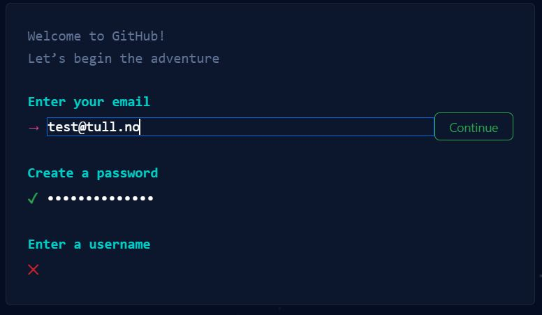
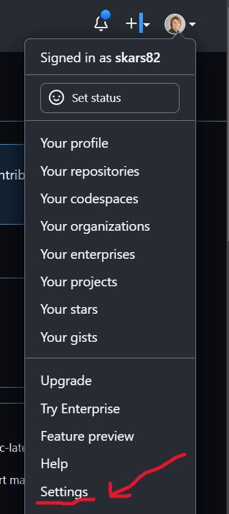
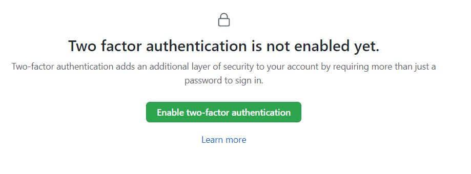
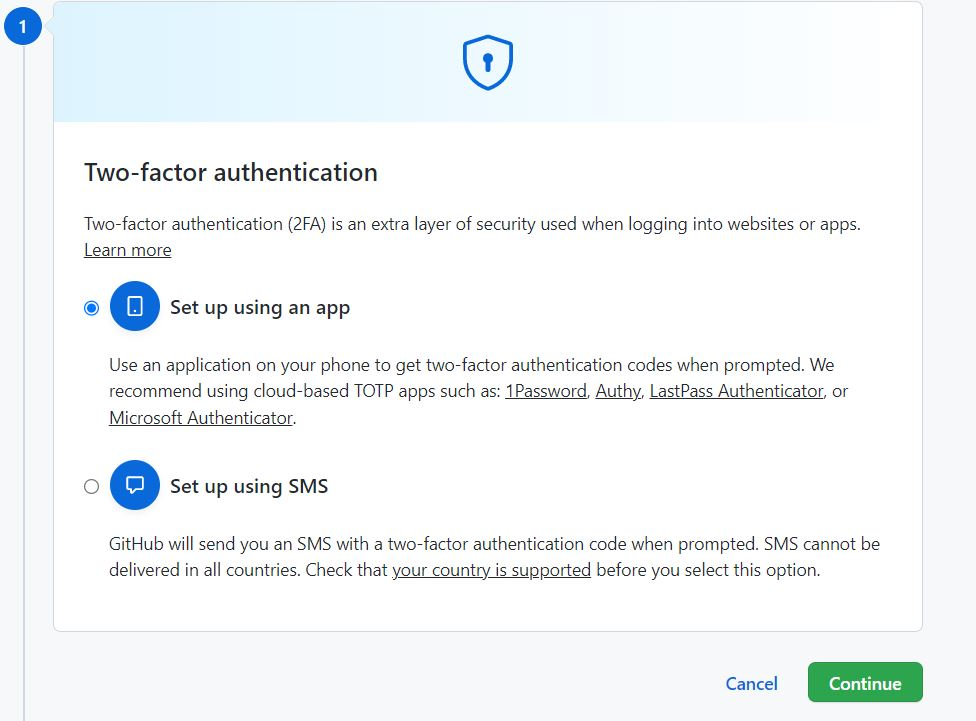
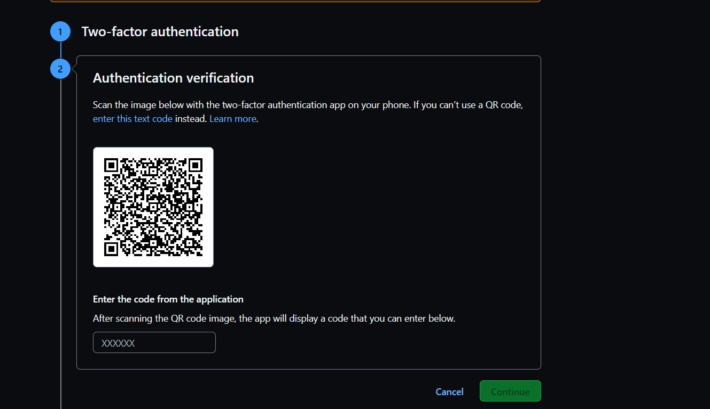
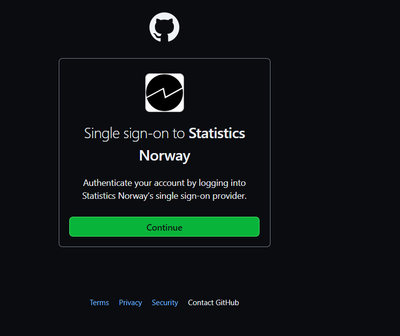

Git og Github
I SSB anbefales det man versjonhåndterer koden sin med Git og deler koden via GitHub. For å lære seg å bruke disse verktøyene på en god måte er det derfor viktig å forstå forskjellen mellom Git og Github. Helt overordnet er forskjellen følgende:
- Git er programvare som er installert på maskinen du jobber på og som sporer endringer i koden din.
- GitHub er et slags felles mappesystem på internett som lar deg dele og samarbeide med andre om kode.
Av definisjonene over så skjønner vi at det er Git som gir oss all funksjonalitet for å lagre versjoner av koden vår. GitHub er mer som et valg av mappesystem. Men måten kodemiljøene våre er satt opp på Dapla så har vi ingen fellesmappe som alle kan kjøre koden fra. Man utvikler kode i sin egen hjemmemappe, som bare du har tilgang til, og når du skal samarbeide med andre, så må du sende koden til GitHub. De du samarbeider med må deretter hente ned denne koden før de kan kjøre den.
I dette kapittelet ser vi nærmere på Git og Github og hvordan de er implementert i SSB. Selv om SSB har laget programmet ssb-project for å gjøre det lettere å bl.a. forholde seg til Git og GitHub, så vil vi dette kapittelet forklare nærmere hvordan det funker uten dette hjelpemiddelet. Forhåpentligvis vil det gjøre det lettere å håndtere mer kompliserte situasjoner som oppstår i arbeidshverdagen som statistikker.
Git
Git er terminalprogram som installert på maskinen du jobber. Hvis man ikke liker å bruke terminalen finnes det mange pek-og-klikk versjoner av Git, blant annet i Jupyterlab, SAS EG og RStudio. Men typisk vil det en eller annen gang oppstå situasjoner der det ikke finnes løsninger i pek-og-klikk versjonen, og man må ordne opp i terminalen. Av den grunn velger vi her å fokusere på hvordan Git fungerer fra terminalen. Vi vil også fokusere på hvordan Git fungerer fra terminalen i Jupyterlab på Dapla.
Hva er Git?
Git er en programvare for distribuert versjonshåndtering av filer. Det vil si at den tar vare på historien til koden din. At Git er distribuert betyr at alle som jobber med koden har en kopi av koden hos seg selv. Når man ønsker å dele koden med andre, så laster man opp koden til et felles kodelager som GitHub. Typisk vil Git brukes til å passe på historien til rene tekstfiler, f.eks. kode-script, hvor det gir mening å se på forskjeller mellom filen på ulike tidspunkter. Men når det er sagt, så kan Git også brukes til å følge med på endringer i andre filtyper, f.eks. binære filer som bilder, PDF-filer, etc.. Men binære filer er ikke så vanlig inkludere i Git-prosjekter siden forskjellene i historikken til filene er vanskelig å forstå for mennesker.
Man aktiverer Git på en mappe i filsystemet sitt med kommandoen git init når man står i mappen som skal versjonshånderes. Da vil Git versjonshåndtere alle filer som er i den mappen og i eventuelle undermapper. Når du så gjør endringer på en fil i mappen, så vil Git registrere endringer. Ønsker du at endringen skal bli et punkt i historikken til prosjektet, så må du først legge til filen i Git med kommandoen git add filnavn. Når du har gjort dette, så kan du lagre endringen med kommandoen git commit -m "Din melding her". Når du har gjort dette, så vil endringen være lagret i Git. Når du har gjort mange endringer, så kan du sende endringene til GitHub med kommandoen git push. Når du har gjort dette, så vil endringene være synlige for alle som har tilgang til GitHub-prosjektet.
I SSB anbefaler vi at du starter et nytt Git-prosjekt ved å benytte ssb-project. Da vil du ikke bare aktivere Git, men du kan også få implementert en del andre gode praksiser for å holde koden din ryddig, oversiktlig og sikker.
Men før vi kan begynne å bruke Git må vi konfigurere vår egen bruker for Git, som er forklart i neste seksjon.
Les mer om Git på https://git-scm.com/.
Oppsett av Git
Alle som bruker GitHub i SSB bør bruke SSB sin Git-konfigurasjon. Hvis ikke kan man bl.a. risikere at output fra Notebooks blir pushet til GitHub. Du kan bruke SSBs konfigurasjon ved å kjøre ssb-gitconfig.py i terminalen og svare på spørsmålene som dukker opp.
For å jobbe med Git så må man konfigurere brukeren sin slik at Git vet hvem som gjør endringer i koden. I praksis betyr det at du må ha filen .gitconfig på hjemmeområdet ditt (f.eks. /home/jovyan/.gitconfig på Dapla) med noe grunnleggende informasjon:
# /home/jovyan/.gitconfig på Dapla
[user]
name = Ola Nordmann
email = <ini>@ssb.noMed denne konfigurasjonen så kan man bruke Git lokalt. Men skal man også bruke GitHub i SSB, dvs. dele kode med andre, så må man også legge til mer informasjon i .gitconfig. Heldigvis er det skrevet et script som gjør dette for deg. For å få anbefalt konfigurasjon for Git så kan du kjøre følgende kommando i terminalen:
ssb-gitconfig.pyDette scriptet vil spørre deg om ditt brukernavn i SSB, og så vil det opprette en fil som heter .gitconfig i hjemmeområdet ditt. Denne filen vil inneholde informasjon om brukernavn, e-post og tilgang til GitHub. I tillegg vil den sørge for at ditt ssb-project ikke sender output fra notebooks til GitHub.
Git og Notebooks
På Dapla er det Jupyterlab som er utviklingsmiljøet for kode. I Jupyterlab vil man ofte jobbe i notebooks, og det har noen konsekvenser for versjonshåndtering. En notebook er en ipynb-fil som inneholder både tekst og kode. Åpner vi disse filene i Jupyterlab så ser vi det kjente notebook-grensesnittet med kode- og markdown-celler. Men egentlig er det bare et grensesnitt bygd over en json-fil1. Denne json-filen inneholder metadata og masse annet som gjør det vanskelig å se forskjellen på en fil over tid. Dette er derfor noe som å fikses før Git blir et nyttig verktøy for disse filene.
I SSB sin anbefalte konfigurasjon setter opp nbdime for å få leselige differ mellom notebooks. Har du satt opp Git med ssb-gitconfig.py så vil dette være automatisk satt opp for deg.
Det finnes også alternativer til å bruke nbdime. På Dapla er Jupytext installert for de som ikke ønsker å versjonshåndtere ipynb-filer, men heller vil bruke rene script-filer som .py- eller .R-filer. Måten Jupytext gjør dette på er konvertere f.eks. en ipynb-fil py-fil for deg, Den kan gjøre det automatisk når du lagrer, eller du kan gjøre det manuelt. Med denne tilnærmingen så kan du be Git ignorere alle ipynb-filer og bare versjonshåndtere de rene script.filene. Oppsett er Jupytext er ikke en del av SSB sin standard-konfigurasjon og er noe du må sett opp selv.
Vanlige Git-operasjoner
Git er veldig sterkt verktøy med mange muligheter. Det er ikke tenkt at alt skal adresseres i dette kapitlet. Men det er noen vanlig operasjoner som er så vanlige at alle som jobber med kode i SSB bør kjenne dem.
Vi har tidligere nevnt at kommandoen for å aktivere versjonshåndtering med Git på en mappe, er git init. Dette gjøres også automatisk når man oppretter et nytt ssb-project.
Hva skjer hvis man gjør en endring i en fil i mappa? For det første kan du kjøre kommandoen git status for å se hvilke endringer Git har oppdaget. Men det betyr ikke at endringene er under versjonskontroll enda. For å fortelle Git om at disse endringene skal registreres så må du kjøre git add <filnavn>. Men fortsatt er ikke endringene et punkt i historien til koden din. For å gjøre det må du kjøre git commit -m "Din melding her". Ved å gjøre det så har du laget et unikt punkt i historien til koden din, med en egen ID, som du kan gå tilbake til senere hvis du ønsker.
Når man utvikler kode så gjør man det fra såkalte branches2. Hvis vi tenker oss at din eksisterende kodebase er stammen på et tre (ofte kalt master eller main), så legger Git opp til at man gjør endringer på denne koden via branches eller grener av treet. Med andre ord holder vi stammen/master urørt helt til vi vet at endringen fungerer som den skal. Til slutt merger vi den inn i master. Vi kan opprette en ny branch og gå inn i den ved å skrive git checkout -b <branch navn>. Da står du i en branch og kan bruke kommandoer som git add og git commit som vist tidligere.
Vi kan merge endringene fra vår branch inn i main ved å først gå inn i main, git switch main, og deretter skrive git merge <branch navn>. Men typisk vil ikke dette være fremgangsmåten i SSB. Når man er fornøyd med endringene i en branch, så vil man pushe den opp til GitHub, slik at en kollega kan vurdere om den skal merges inn i main. Dermed gjøres selve mergen i GitHub-grensenittet. Vi skal se nærmere på GitHub i neste kapittel.
GitHub
GitHub er et nettsted som bl.a. fungerer som vårt felles mappesystem for deling av kode. SSB har sin egen organisasjonskonto med navn statisticsnorway. Men selv om SSB har en organisasjonskonto på GitHub må alle ansatte opprette sin egen brukerprofil, og knytte den mot SSB sin organisasjonskonto. Under forklarer vi hvordan du gjør dette.
Opprett GitHub-bruker
Dette kapittelet er bare relevant hvis man ikke har en GitHub-brukerkonto fra før. For å bruke ssb-project-programmet til å generere et remote repo på GitHub må du ha en konto. Derfor starter vi med å gjøre dette. Det er en engangsjobb og du trenger aldri gjøre det igjen.
SSB har valgt å ikke sette opp SSB-brukerne til de ansatte som GitHub-brukere. En viktig årsak er at er en GitHub-konto ofte regnes som en del av den ansattes CV. For de som aldri har brukt GitHub før kan det virke fremmed, men det er nok en fordel på sikt når alle blir godt kjent med denne arbeidsformen.
Slik gjør du det:
- Gå til https://github.com/
- Trykk Sign up øverst i høyre hjørne
- I dialogboksen som åpnes, se Figur 1, skriver du inn din e-postkonto og lager et passord. Dette trenger ikke være din SSB-bruker og e-post. Vi anbefaler at du bruker en personlig e-postkonto og velger ditt eget passord. Det samme gjelder brukernavn også.

Du har nå laget en egen GitHub-bruker. I neste steg skal vi knytte denne kontoen til din SSB-bruker.
To-faktor autentisering
Hvis du har fullført forrige steg så har du nå en GitHub-konto. Hvis du står på din profil-side så ser den ut som i Figur 2.

Det neste vi må gjøre er å aktivere 2-faktor autentisering, siden det er dette som benyttes i SSB. Hvis du står på siden i bildet over, så gjør du følgende for å aktivere 2-faktor autentisering mot GitHub:
Trykk på den lille pilen øverst til høyre og velg Settings(se Figur 3).
Deretter velger du Password and authentification i menyen til venstre.
Under Two-factor authentication trykker du på Enable.

- Figur 4 viser dialogboksen som vises. Velg Enable two-factor authentification.

- Figur 5 viser dialogboksen som vises for å velge hvordan man skal autentisere seg. Her anbefales det å velge Set up using an app, slik at du kan bruke Microsoft Authenticator-appen på din mobil.

Figur 6 viser QR-koden som vises. Denne skal vi bruke i neste steg.

Strekkoden over skal skannes i din Microsoft Authenticator-app på mobilen, som vist i Figur 7. Åpne appen, trykk på Bekreftede ID-er, og til slutt trykk på Skann QR-kode. Deretter skanner du QR-koden fra punkt 5.
Når koden er skannet har du fått opp følgende bilde på appens hovedside (se bilde til høyre). Skriv inn den 6-siffer koden på GitHub-siden med QR-koden.
Til slutt lagrer du Recovery-codes et trygt sted som bare du har tilgang til.

Nå har vi aktivert 2-faktor autentisering for GitHub og er klare til å knytte vår personlige konto til vår SSB-bruker på SSBs “Github organisation” statisticsnorway.
Koble deg til SSB
I forrige steg aktiverte vi 2-faktor autentisering for GitHub. Det neste vi må gjøre er å koble oss til Single Sign On (SSO) for SSB sin organisasjon på GitHub:
- Trykk på lenken https://github.com/orgs/statisticsnorway/sso
- I dialogboksen som dukker opp trykker du på Continue, slik som vist i Figur 8.

Når du har gjennomført dette så har du tilgang til statisticsnorway på GitHub. Går du inn på denne lenken så skal du nå kunne lese både Public, Private og Internal repoer, slik som vist i Figur 9.

Personal Access Token (PAT)
Når vi skal jobbe med SSB-kode som ligger lagret hos statistcsnorway på GitHub, så må vi autentisere oss. Måten vi gjøre det på er ved å generere et Personal Access Token (ofte forkortet PAT) som vi oppgir når vi vil hente eller oppdatere kode på GitHub. Da sender vi med PAT for å autentisere oss for GitHub.
Opprette PAT
For å lage en PAT som er godkjent mot statisticsnorway så gjør man følgende:
Gå til din profilside på GitHub og åpne Settings slik som ble vist Seksjon 1.2.2.
Velg Developer Settings i menyen til venstre.
I menyen til venstre velger du Personal Access Token, og deretter Tokens (classic).
Velg Generate new token og deretter Generate new token (classic).
Under Note kan du gi PAT’en et navn. Velg et navn som er intuitivt for deg. Hvis du skal bruke PAT til å jobbe mot Dapla, så ville jeg ganske enkelt kalt den dapla. Hvis du skal bruke den mot bakkemiljøet ville jeg kalt den prodsone eller noe annet som gjør det lett for det skjønne innholdet i ettertid.
Under Expiration velger du hvor lang tid som skal gå før PAT blir ugyldig. Dette er en avvening mellom sikkerhet og hva som er praktisk. Det anbefales at du velger 365 dager. Når PAT utløper må du gjenta stegene i dette kapittelet.
Under Select scopes velger du Repo slik som vist i Figur 10.

- Trykk på Generate token nederst på siden og du får noe lignende det du ser i Figur 11.

Kopier deretter PAT til en midlertidig fil. Grunnen er at du aldri vil se det igjen her etter at vi har gjennomført neste steg.
Deretter trykker du på Configure SSO og velger Authorize ved siden statisticsnorway, slik som vist i Figur 12. Svar deretter på spørsmålene som dukker opp.
Vi har nå opprettet en PAT som er godkjent for bruk mot SSB sin kode på GitHub. Det betyr at hvis vi vil jobbe med Git på SSB sine maskiner i sky eller på bakken, så må vi sendte med dette tokenet for å få lov til å jobbe med koden som ligger på statisticsnorway på GitHub.
Lagre PAT
Det er ganske upraktisk å måtte sende med tokenet hver gang vi skal jobbe med GitHub. Vi bør derfor lagre det lokalt der vi jobber, slik at Git automatisk finner det. Det finnes mange måter å gjøre dette på og det er ikke bestemt hva som skal være beste-praksis i SSB. Men en måte å gjøre det er via en .netrc-fil. Vi oppretter da en fil som heter .netrc på vårt hjemmeområde, og legger følgende informasjon på en (hvilken som helst) linje i filen:
machine github.com login <github-bruker> password <Personal Access Token>GitHub-bruker er da din personlige bruker og IKKE brukernavnet ditt i SSB. Personal Access Token er det vi lagde i forrige kapittelet.
En veldig enkel måte å lagre dette er som følger. Anta at min personlige GitHub-bruker er SSB-Chad og at min Personal Access Token er blablabla. Da kan jeg gjøre følgende for å lagre det i .netrc:
Gå inn i Jupyterlab og åpne en Python-notebook.
I den første kodecellen skriver du:
!echo "machine github.com login SSB-Chad password blablabla" >> ~/.netrcAlternativt kan du droppe det utropstegnet og kjøre det direkte i en terminal. Det vil gi samme resultat. Koden over legger til en linje med teksten
machine github.com login SSB-Chad password blablabla
i en .netrc-fil på din hjemmeområdet, uanvhengig av om du har en fra før eller ikke. Hvis du har en fil fra før som allerede har et token fra GitHub, ville jeg nok slettet det før jeg legger en et nytt token.
Hver gang du jobber mot GitHub vil Git sjekke om informasjon om autentisering ligger i denne filen, og bruke den hvis den ligger der.
Oppdater PAT
I eksempelet over lagde vi en PAT som var gyldig i 90 dager. Dermed vil du ikke kunne jobbe mot GitHub med dette tokenet etter 90 dager. For å oppdatere tokenet gjør du følgende:
Lag et nytt PAT ved å repetere Seksjon 1.2.4.1.
I miljøet der du skal jobbe med Git og GitHub går du inn i din .netrc og bytter ut token med det nye.
Og med det er du klar til å jobbe mot statisticsnorway på GitHub.
Fotnoter
Prøv selv å åpne en ipynb som json ved høreklikke på fila i Jupyterlab, velge Open with, og velg json. Da vil du se den underliggende json-filen↩︎
Branches kan oversettes til grener på norsk. Men i denne boken velger vi å bruke det engelske ordet branches. Grunnen er at det erfaringsmessig er lettere forholde seg til det engelske ordet når man skal søke etter informasjon i annen dokumentasjon↩︎